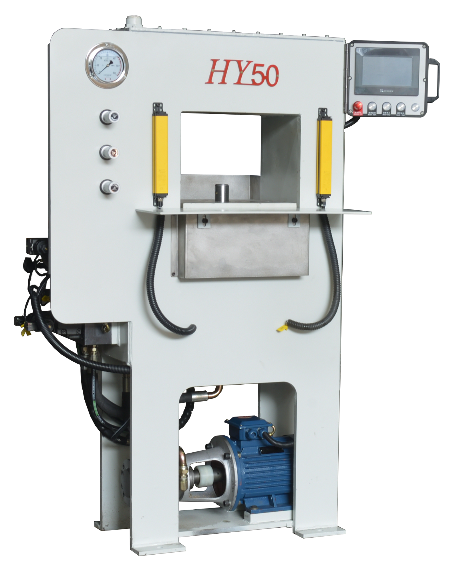

Automatic Integrated Experimental Prototyping
A compact hydraulic press designed for laboratory development, product prototyping and forming process verification. HY-50 combines practical forming capability with flexible setup for new product development.

HY-50 is positioned as an experimental and prototyping machine for powder pressing and forming tests. Its compact footprint makes it suitable for laboratory environments, while the automatic control system supports repeatable forming operations.
The following data are based on the current HY-50 specification sheet.
| Technical Parameter | Unit | Data |
|---|---|---|
| Nominal pressure | kN | 500 |
| Hydraulic system pressure | MPa | 21 |
| Master cylinder return pressure | kN | 20 |
| Max stroke of master cylinder | mm | 180 |
| Distance from top cylinder to working table — Max | mm | 230 |
| Distance from top cylinder to working table — Min | mm | 60 |
| Stroke speed — Down | mm/s | 125 |
| No-load pressing speed | mm/time | 5 |
| Lift speed | mm/s | 200 |
| Working area — Left to right | mm | 400 |
| Working area — Front to back | mm | 300 |
| Ejection cylinder pressure | kN | 40 |
| Max feeding depth | mm | 50 |
| Oil pump flow rate | L/min | 10 |
| Overall size — Left to right | mm | 700 |
| Overall size — Front to back | mm | 300 |
| Overall height | mm | 1500 |
| Height from working table to ground | mm | 700 |
| Motor power | kW | 4 |
| Total weight | T | 0.9 |
A real machine operation video from Heroseong. More equipment videos are available on our Instagram Reels.
The current 50T application material covers ceramic, glass, decorative ceramic profiles, metal powder and special-shaped powder products.


Send us your product photos, drawings or sample requirements. We can discuss the suitable forming method and equipment configuration.
Contact Ben →